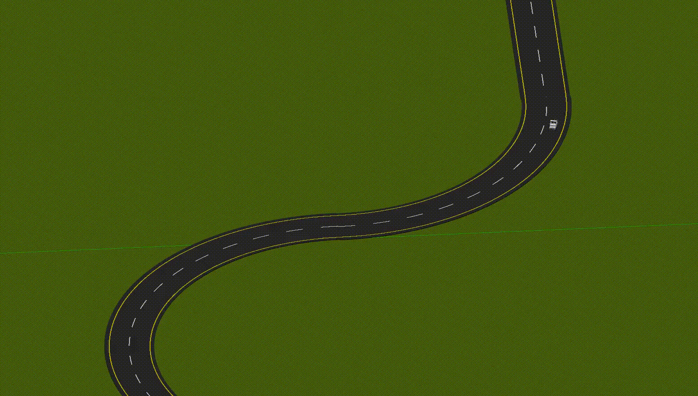
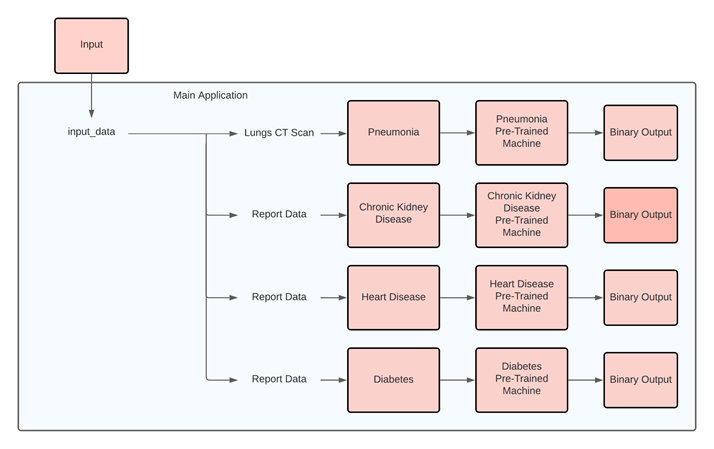
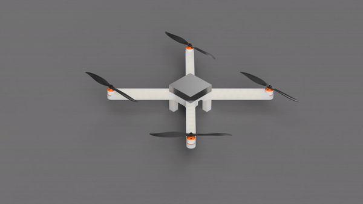
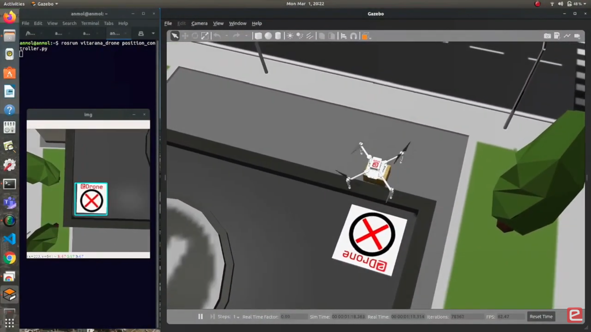

Intelligent Ground Vehicle Competition (IGVC)
Achieved 2nd place in Cyber and 3rd place in AutoNAV challenges at the annual international competition hosted at Oakland University, Michigan. Developed a fully autonomous vehicle equipped with advanced object detection, path planning, and traversal capabilities. Integrated technologies to enable accurate obstacle detection and avoidance, efficient route planning, and autonomous navigation through complex environments.

Reinforcement Learning for Game Optimization
Optimized gameplay in BreakoutDeterministic using Deep Q-Networks (DQN) and Double DQN, achieving mean rewards of 8.04 and 10.1 respectively. Implemented ε-greedy policy for balanced exploration and exploitation with replay memory for stable learning. DQN used reward prediction errors while Double DQN utilized a second network for more reliable training.

Generalized RAcing Intelligence Competition (GRAIC)
Implemented path planning and control algorithms for autonomous racing car in CARLA simulator. Utilized Hybrid A* search for optimal waypoint navigation in complex racetrack environments combined with Proportional-Derivative (PD) controller for real-time autonomous control including obstacle avoidance, steering angle, speed, and braking adjustments. Github

Autonomous Vehicle (GEM e2)
In Progress: Learning GEMstack framework to control the GEM e2 autonomous vehicle for navigation and control tasks.

Reinforcement Learning on Unitree Go1
In Progress: Implementing reinforcement learning controller to replace and benchmark the baseline MPC controller for quadruped locomotion.

Vehicle Control System
Designed and executed control system for steering GEM e2 vehicle along waypoint-segmented tracks. Implemented two main components: longitudinal controller for speed management and lateral controller for directional control.

Lane Detection Using Computer Vision
Implemented lane detection system for autonomous vehicles using ROS, Gazebo, and Python OpenCV. System processes video feed frame-by-frame, applying gradient and color thresholds to identify road edges and lane markings. Used perspective transformation for top-down view and histogram-based segmentation to locate lane center by identifying highest pixel density areas.

Robotis Mini Humanoid Robot
In Progress: Implementing basic kinematics to control the Mini humanoid robot in real world and ROS simulation environments.

LiDAR-Based SLAM Implementation
Developed SLAM algorithm using ROS and Python to process robot data from rosbag, including LiDAR measurements and EKF-estimated trajectory. Utilized split-and-merge line fitting algorithm to identify corners in LiDAR data for geometric map creation. Compared custom line-fitting results with Gmapping-generated maps for validation.

Semi-Soft Robotic Hand
Designed and built soft robotic hand controlled by five individual stepper motors for enhanced dexterity and flexibility. Utilized Arduino for control system and 3D modeling/printing for construction.

Robot Localization Using Particle Filtering
Implemented Monte Carlo Localization (MCL) algorithm in Python for vehicle localization using ROS and Gazebo simulations. Algorithm initializes with randomly generated particles that adjust iteratively as vehicle moves, converging towards actual location. Developed specialized module to process raw LiDAR point cloud data for distance calculations. Particle filter maintains position (x-y coordinates), orientation, weight, and environmental map for each particle.

Chronic Disease Detection System
Developed ML-based expert system using patient data to diagnose chronic conditions. Implemented: Logistic Regression and Random Forest for chronic kidney disease; Logistic Regression and K-Nearest Neighbor for diabetes; Random Forest and Decision Tree for heart disease; CNN on chest x-rays for pneumonia and COVID-19. Led integration of all four models and developed pneumonia/COVID-19 detection model. Published Paper

Custom Surveillance Drone
Engineered custom surveillance drone featuring modular 3D-printed body and high-performance 1200KV BLDC motors. Controlled via Pixhawk Flight Controller with ESC for motor management.

Lane Detection - Hough Transform
Developed vision-based perception algorithm for autonomous vehicles using modern computer vision techniques. Implemented end-to-end lane recognition using edge detection and polynomial regression for straight lane lines, utilizing Histogram and Hough Transform methods. Medium Article

e-Yantra Robotics Competition (eYRC)
Participated in IIT Bombay's e-Yantra Robotics Competition to design and develop drone for autonomous parcel delivery.
.png)

{kind=link}
{kind=link}
{kind=link}
{kind=link}